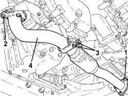
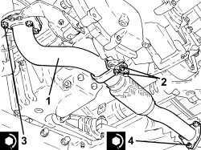

1076B72 INTERMEDIATE EXHAUST PIPE WITH HOSE SECTION - R+R
- Path
- Procedures > 10 ENGINE > 1076 EXHAUST PIPES AND SILENCERS > 1076B EXHAUST PIPES AND SILENCERS > 1076B72 INTERMEDIATE EXHAUST PIPE WITH HOSE SECTION - R+R
- Kind
- repair procedure (removal / refitting; the operation number is the code)
- Applies to
- engines: 1.9 JTD 8v, 1.9 JTD 16v, 2.4 JTD 20v; all production periods
- Interactive page
- https://sloeber94.github.io/elrnDB-fCrm/en/#/194000366
Applies to: engines: 1.9 JTD 8v, 1.9 JTD 16v, 2.4 JTD 20v; all production periods
 Removing
Removing
 Refitting
Refitting- Position the vehicle on a lift.
Op. 7055B54 UNDER ENGINE PROTECTION/GUARD - R.R.
1. Undo the nuts securing the intermediate exhaust pipe to the D.P.F. particle filter
2. Undo the nuts securing the intermediate exhaust pipe to the catalytic converter.
3. Undo the nuts fixing the intermediate exhaust pipe mounting bracket.
4. Remove the intermediate exhaust pipe.
- Remove the seals.

Applies to: engines: 1.9 JTD 8v, 1.9 JTD 16v, 2.4 JTD 20v; all production periods
Refitting
Removing- Place the seals in their housings.
1. Place the intermediate exhaust pipe back in its housing.
2. Tighten the nuts securing the intermediate exhaust pipe mounting bracket.
3. Tighten the nuts securing the intermediate exhaust pipe to the catalytic converter to the recommended torque.
Component | Fastening | dia | Value (daNm) | Validity |
|---|---|---|---|---|
Intermediate exhaust pipe with flexible section | Nut | M8 | (catalytic converter side) 2.2 - 2.6 | 1.9 JTD 16v 1.9 JTD 8v 2.4 JTD 20v |
4. Tighten the nuts securing the intermediate exhaust pipe to the D.P.F. particle filter to the recommended torque.
Component | Fastening | dia | Value (daNm) | Validity |
|---|---|---|---|---|
Intermediate exhaust pipe with flexible section | Nut | M8 | (D.P.F. particle filter side) 1.2 - 2.6 | 1.9 JTD 16v 1.9 JTD 8v 2.4 JTD 20v |

Applies to: engines: 1.9 JTD 8v, 1.9 JTD 16v, 2.4 JTD 20v; all production periods
Op. 7055B54 UNDER ENGINE PROTECTION/GUARD - R.R.
- Remove the vehicle from the lift.
Topics linked from this page (2)
Topics that link to this page (19)
- 1004B10 POWER UNIT WITH MANUAL GEARBOX - R.R
- 1004B14 POWER UNIT WITH AUTOMATIC TRANSMISSION R + R
- 1008C32 GEARBOX LOWER REACTION ROD -R.R.
- 1008C34 BRACKET ON GEARBOX FOR LOWER REACTION ROD - R.R.
- 1020A20 CRANKCASE OIL SUMP - R.R CLEAN SURFACES FOR SEALANT APPLICATION
- 1020D14 FRONT CRANKSHAFT OIL SEAL COVER - R.R AND REPLACE SEALS FOR VERSIONS WITH OIL PUMP ON CRANKSHAFT, TIMING SIDE
- 1064A27 PIPE BETWEEN VACUUM RESERVOIR AND ACTUATOR CONTROL SOLENOID VALVE - R.R.
- 1080B40 CATALYTIC PRE-CONVERTER - R.R
- 1080B62 CATALYTIC CONVERTER - R + R
- 1084A40 ENGINE OIL LEVEL SENSOR - R + R
- 1084B26 ENGINE OIL INTAKE DUCT - R.R
- 1084B34 CARTRIDGE ENGINE OIL FILTER SUPPORT - R + R
- 1084B40 ENGINE OIL DELIVERY PIPE TO TURBOCHARGER - R + R
- 1084B42 ENGINE OIL RETURN PIPE FROM TURBO - R + R
- 4130B25 POWER STEERING PUMP ASSEMBLY R R FOR VERSIONS WITH AIR CONDITIONER
- 4130B32 POWER STEERING PUMP SUPPORT - R R
- 4130B40 SUPPLY PIPE FROM PUMP TO POWER STEERING BOX - R.R.
- 4130B42 RETURN PIPE FROM POWER STEERING BOX TO POWER STEERING FLUID RESEVIOR - R.R.
- 5020M44 SUPPLEMENTARY INDEPENDENT HEATER EXHAUST PIPE SILENCER R R